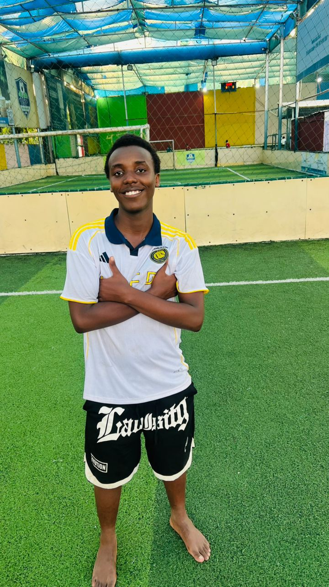

I'm a student with a passion for learning and growth. I enjoy exploring new ideas and
connecting with others.
I have a strong
ambition in digital forensics and data science, and I am eager to develop my skills in these areas.
I am committed to continous learning and growth, and I am excited about the opportumities
that lie ahead in my journey to becoming a big data analyst and data scientist.
I usually spend my free time playing Football and interacting with my peers, and I also like to read books and articles about Artificial intelligence, data science, and data analysis.
| Education Level | School | Field of Study | Year |
|---|---|---|---|
| Undergraduate | University of Dar es Salaam | Computer Science | 2025 - Present |
| Advanced Secondary School | Tabora Boys' High School | PCM Combination | 2023 - 2025 |
| Secondary Education | St. Joseph Allamano Secondary School | All Major Subjects | 2019 - 2022 |
| Primary Education | Kisa English Medium Primary School | All Major Subjects | 2012 - 2018 |

Here are some of my favorite links that I find useful and interesting: